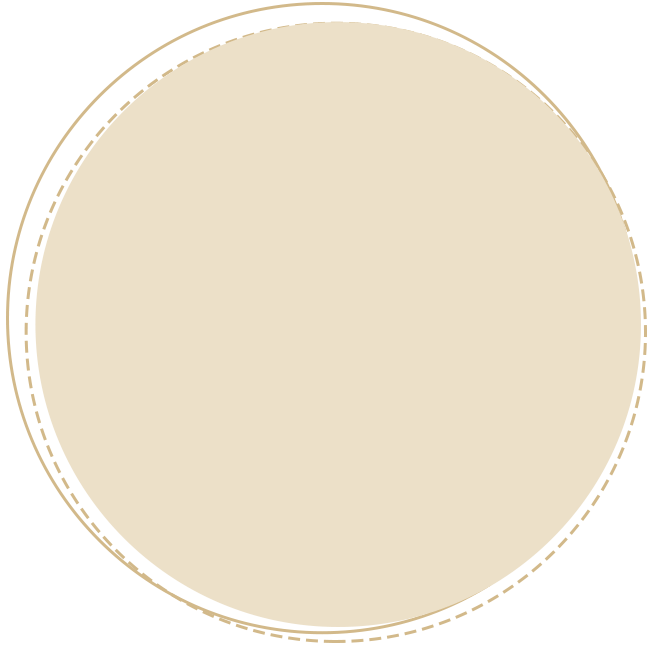

<!DOCTYPE html>
<html>
<head>
    <meta name="viewport" content="width=device-width, initial-scale=1, minimum-scale=1, maximum-scale=1, user-scalable=0">
    <meta name="apple-mobile-web-app-capable" content="yes">
    <meta name="apple-mobile-web-app-status-bar-style" content="black">
    <meta http-equiv="Content-Type" content="text/html; charset=utf-8" />
    <title>手机动画</title>
    <script src="js/rem.js"></script>
    <style>
        body,h1,h2,h3,p,dl,dd,ol,ul,li,th,td,form,fieldset,input,button,textarea{margin:0;padding:0}
        html{-webkit-text-size-adjust:none; word-wrap:break-word; background-color:#3c3c3c;-webkit-text-size-adjust:none; word-wrap:break-word;
        background:url(img/jj_logo.jpg) center 30px  no-repeat; background-color:#3c3c3c; font-family:Arial, Helvetica, sans-serif;}
        html,body{ overflow:hidden; height:100%; width:100%;}
        h1,h2,h3{font-size:100%}
        ol,ul{list-style:none}
        table{border-collapse:collapse;border-spacing:0;empty-cells:show;font-size:inherit}
        fieldset,img{border:0}
        cite,em,s,i,b{font-style:normal}
        input,button,textarea,select{font-size:100%}
        body,input,button,textarea,select,option{font-size:normal;}
        a,input,textarea{text-decoration:none;outline:0}
        li,img,label,input{vertical-align:middle}

        .mh,
        .page_mun1 .mh,
        .page_mun2 .mh{ position: absolute; top:0; left: 0; width: 100%; z-index: 1; opacity: 0;}
        .mh img,
        .page_mun1 .mh img,
        .page_mun2 .mh img{ width:100%; float: left;}
        .mh_be,
        .page_mun1 .mh_be,
        .page_mun2 .mh_be{ -webkit-animation:fadeIn 1.3s ease 0s 1 both;}

        .page1_xys{ position: absolute; width: 70.2777%; z-index: 3; }
        .page1_xys img{ width: 100%; }
        .d_bg0{ width: 90.2777%; position: absolute; top:0; left: 4.8611%; z-index: 2; margin-top: 30%; }
        .d_bg0 img{ width: 100%;}
        .d_bg0_be{ -webkit-animation:zoomIn 0.5s ease 0.5s 1 both;}
        .d_bg1{ width: 90.2777%; position: absolute; top:0; left: 4.8611%; z-index: 3; margin-top: 30%;}
        .d_bg1 img{ width: 100%;}
        .d_bg1_be{ -webkit-animation:puffIn 0.3s ease-out 1s 1 both;}
        .d_bg2{ width: 90.2777%; position: absolute; top:0; left: 4.8611%; z-index: 4; margin-top: 30%;}
        .d_bg2 img{ width: 100%;}
        .d_bg2_be{ -webkit-animation:bounceIn 0.9s ease 1.3s 1 both;}
        .d_bg3{ width: 67.2222%; position: absolute; top:0; left: 9.1666%; z-index: 5; margin-top: 90%; }
        .d_bg3 img{ width: 100%;}
        .d_bg3_be{ -webkit-animation:bounceInLeft 1s ease 2.2s 1 both;}
        .d_bg4{ width: 67.7777%; position: absolute; top:0; left: 16.1111%; z-index: 6; margin-top: 112%;}
        .d_bg4 img{ width: 100%;}
        .d_bg4_be{ -webkit-animation:zoomIn 0.4s ease 3.2s 1 both;}
        .qk1{-webkit-animation:fadeInLeft .5s linear 0.2s 1 both;}
        .qk2{-webkit-animation:flash .5s linear 0.2s 1 both;}
        .qk3{-webkit-animation:jello 3s linear 0.2s 1 both;}
        .qk4{-webkit-animation:heartbeat 1s linear 0.2s 1 both;}
        .qk5{-webkit-animation:bounceOut 1s linear 0.2s 1 both;}
        .qk6{-webkit-animation:rubberBand .5s linear 0.2s 1 both;}
    </style>
    <link href="css/animat.css" rel="stylesheet" type="text/css" />
    <script src="js/page_animation.min.js" type="text/javascript"></script>
</head>
<body>
    <div id="domeid"></div>
    <script type="text/javascript">
        "use strict";
        var page_json = {
            page: {
                0: {
                    page_class: "page_mun0",
                    bg_img: "img//page1_bg.jpg",
                    bg_color: "#ebebeb",
                    html:   '<div class="page1_xys"></div>' +
                            '<div class="d_bg0" data-begin="d_bg0_be"></div>' +
                            '<div class="d_bg1" data-begin="qk1 qk2 qk3 qk4 qk5 qk6 qk1 qk2 qk3"></div>' +
                            '<div class="d_bg2"  data-begin="qk1 qk3 qk2 qk6"></div>' +
                            '<div class="d_bg3"></div>' +
                            '<div class="d_bg4"></div>',
                    goin_fn: function(){
                        console.log('进入0', arguments);
                    },
                    out_fn: function(){
                        console.log('退出0', arguments);
                    }
                },
                1: {
                    bg_color: "#ebebeb",		
                    html: '<a href="//www.163.com">2<a><br />2<br />2<br />2<br /><div class="d_bg3" data-begin="qk1 qk2 qk3 qk4 qk5 qk6 qk1 qk2 qk3 qk1 qk3 qk2 qk6 "></div>',
                    goin_fn: function(){
                        console.log('进入1', arguments);
                    },
                    out_fn: function(){
                        console.log('退出1', arguments);
                    }
                },
                2: {
                    bg_color: "#f30",	
                    html: "3<br />3<br />3<br />3<br />3<br />3<br />3<br />3<br />3",
                    goin_fn: function(){
                        console.log('进入2', arguments);
                    },
                    out_fn: function(){
                        console.log('退出2', arguments);
                    }
                },
                3: {
                    bg_color: "#ebebeb",
                    html: "4<br />4<br />4<br />4<br />4<br />4<br />4<br />4<br />4",
                    goin_fn: function(){
                        console.log('进入3', arguments);
                    },
                    out_fn: function(){
                        console.log('退出3', arguments);
                    }
                },
                4: {
                    bg_color: "#5741db",
                    html: "5<br />5<br />5<br />5<br />5<br />5<br />5<br />5<br />5<br />",
                    goin_fn: function(){
                        console.log('进入4', arguments);
                    },
                    out_fn: function(){
                        console.log('退出4', arguments);
                    }
                },
                5: {
                    bg_color: "#ebebeb",
                    html: "6",
                    goin_fn: function(){
                        console.log('进入5', arguments);
                    },
                    out_fn: function(){
                        console.log('退出5', arguments);
                    }
                }
            },
            dome_id: '#domeid',// 'JQ选择器的方试传入',

            mp3: "audio/temp.mp3",      //配音乐地址，不配时音乐图标就不出现;
            mp3_play: true,       //音乐默认是不播放的,与mp3: ""; 一起用

            //page_num: true,       //页号是否出现，不配时就不出现页码
            //right_slide: true,      //滑动方向，不配时默认是上下滑

            //slide_page: false,   //设为false时为给滑动关闭，默认为打开。
            //pointer: false,      //设为"false" 时不打开引导箭头
            all_fn: function(){
                console.log('页面写入完成',arguments);
            }
        };
        </script>
    <script type="text/javascript">
        var aa = yi_public.page_animation(page_json);
        console.log(aa);
    </script>
</body>
</html>
